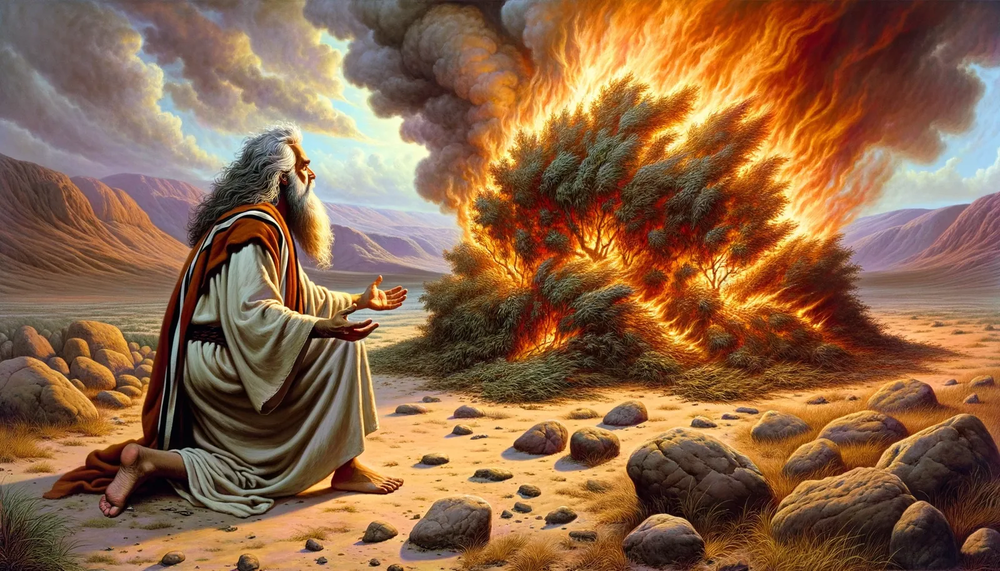
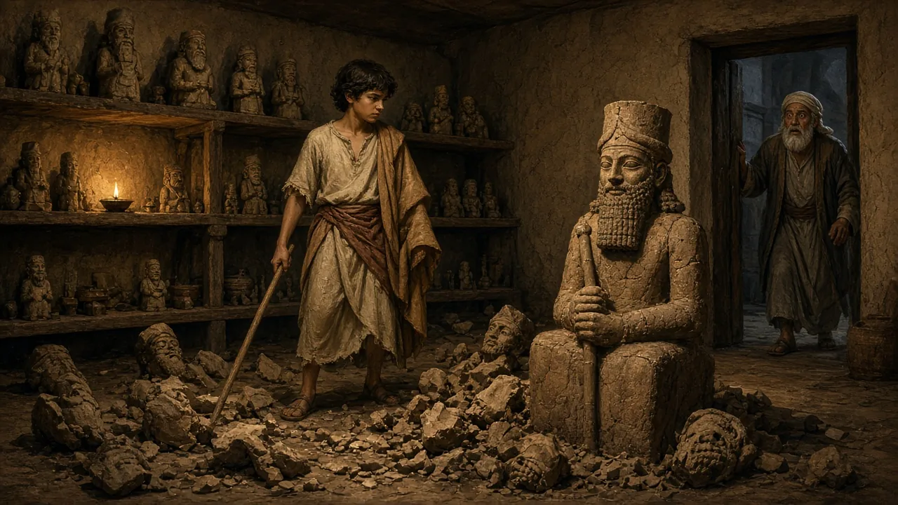
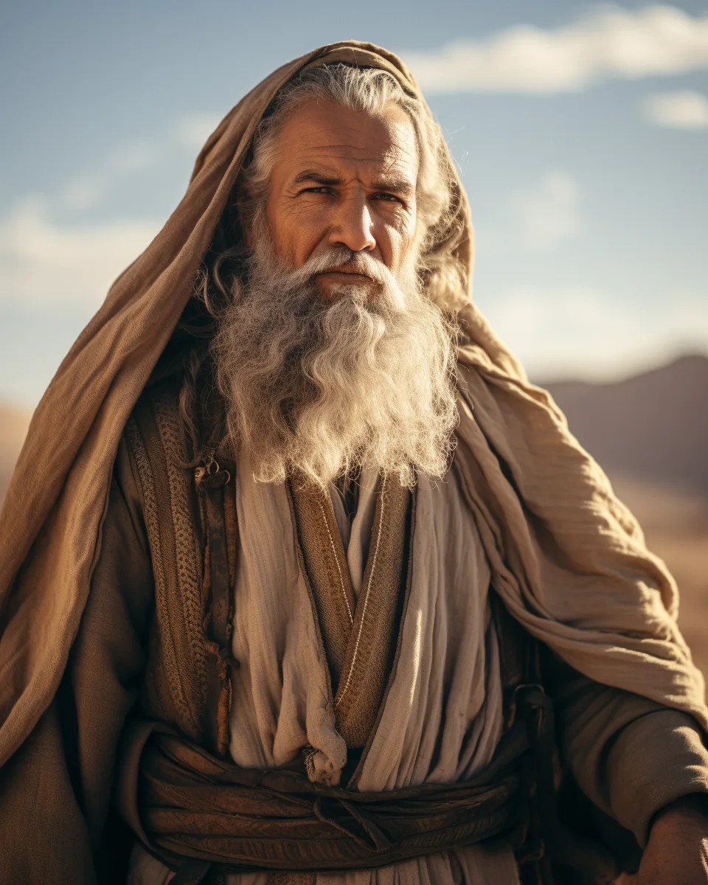
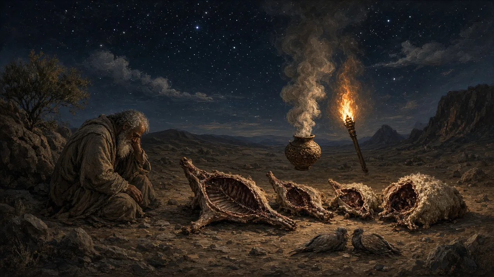
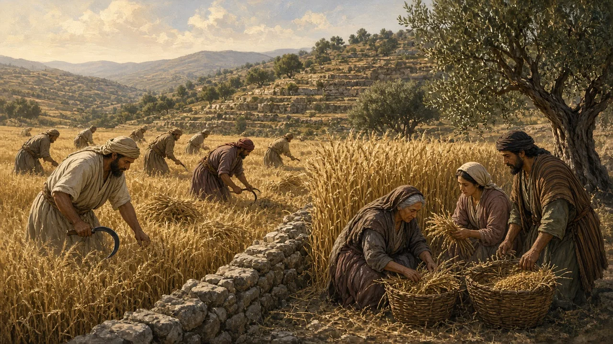
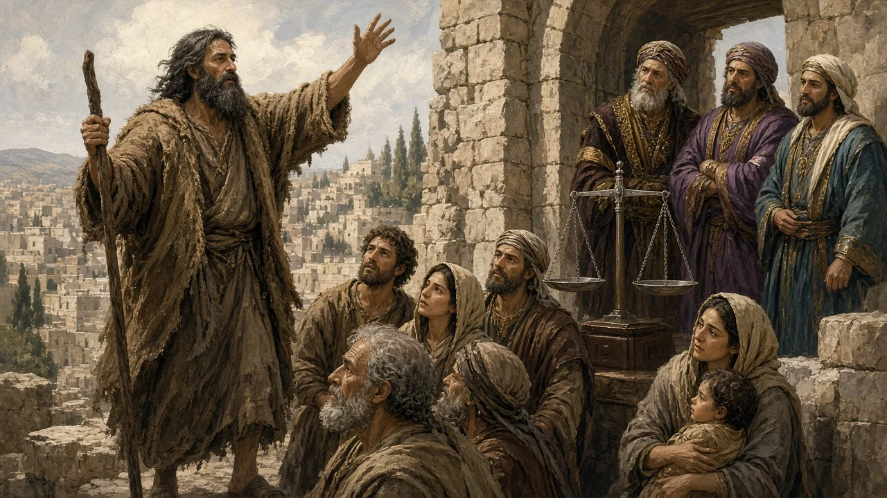
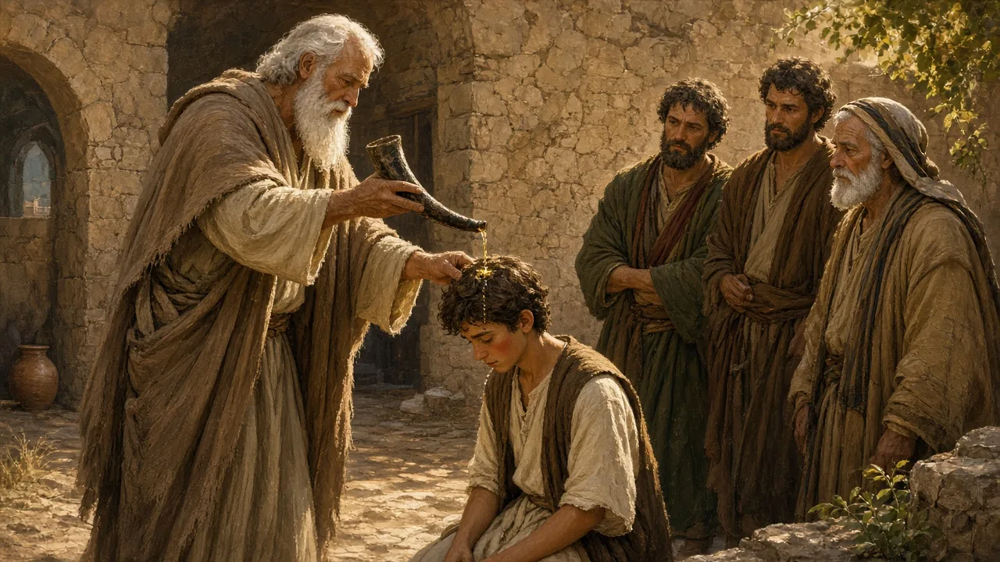
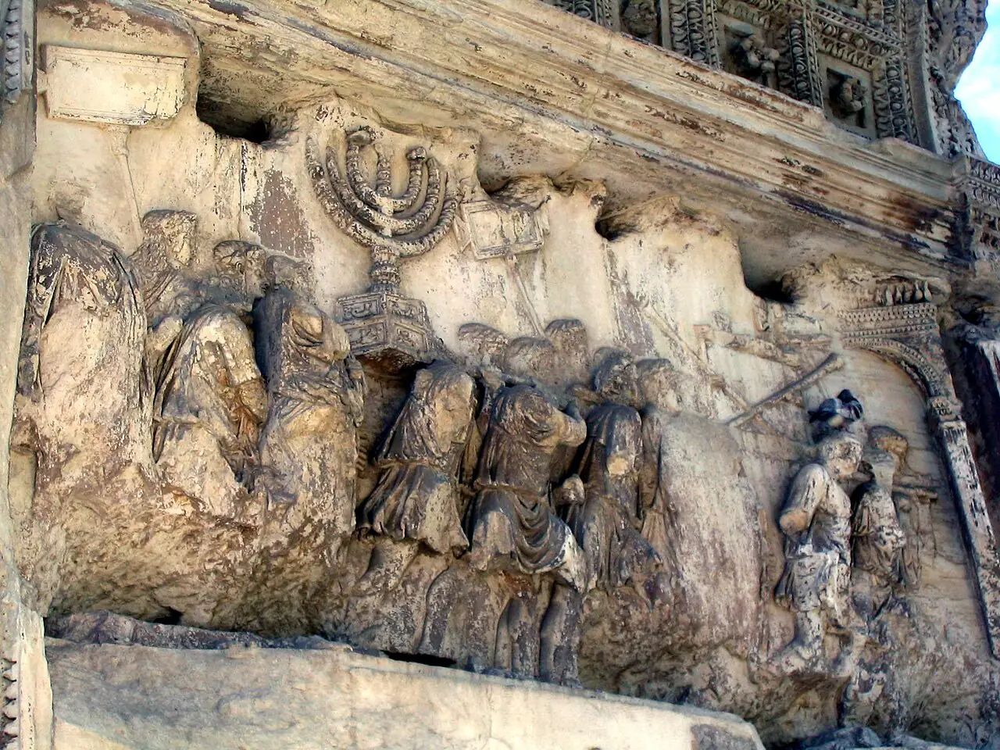

REL 210 World Religions · Chapter 10 · Lecture 2
Beliefs, doctrines, ethics, and symbols in Judaism
Lecture Roadmap
How does one God ground a universal moral order?
How do chosenness, Torah, holiness, and justice connect?
How do messianic hope, afterlife, and symbols express identity?
Section I
What must God be like for morality to be grounded in the divine?
Teachings of Judaism · One God
Hear, O Israel: The Lord is our God, the Lord alone.
Deuteronomy 6:4 (NRSV)
Shema Yisrael, Adonai Eloheinu, Adonai Echad
AI-generated image: a mezuzah on a doorpost (Deuteronomy 6:9)
Teachings of Judaism · One God
Deuteronomy 6:4 with the divine name left untranslated (a literal rendering, not a published translation): Hear, O Israel: YHWH is our God, YHWH is one.
Greek for “four letters”: the Hebrew consonants Y-H-W-H (yod, he, vav, he). Traditional Jews avoid pronouncing the name, saying Adonai (“my Lord”) in prayer and HaShem (“the Name”) in ordinary speech.
Teachings of Judaism · One God
At the burning bush, Moses asks God’s name. The answer is a riddle:
God said to Moses, “I AM WHO I AM.”
Exodus 3:14 (NRSV)
Hebrew: Ehyeh asher ehyeh (transliteration)

Illustration from the original slides (source unknown): Moses at the burning bush (Exodus 3)
God
God Almighty (traditional); meaning debated, perhaps “God of the mountain”
Most High God
My Lord
The Name
The Holy One, blessed be He
Definitions
Most significant contribution to world religion and history
Belief in one and only one god
Belief in one and only one god who is the source of morality and demands goodness, i.e., ethical conduct
According to the Talmud (Sanhedrin 56a), all descendants of Noah, that is, all of humanity, are commanded to: (1) establish courts of justice; and not to (2) curse God, (3) worship idols, (4) commit forbidden sexual relations, (5) shed blood, (6) rob, or (7) eat a limb torn from a living animal.
Nature of Ethical Monotheism
What does God need to be like for this belief to be meaningful?
Contrast the Hebrew God to the polytheistic gods of the day.
Nature of Ethical Monotheism
In the beginning when God created the heavens and the earth, …
Genesis 1:1 (NRSV)
Nature of Ethical Monotheism
For all the gods of the peoples are idols, but the Lord made the heavens.
Psalm 96:5 (NRSV)

AI-generated illustration of a rabbinic legend (Genesis Rabbah 38:13), not a story told in the Torah
To stop treating something as divine. In this view nature is created and good, but it is not a god to be worshiped or appeased; moral standards come from its Creator, not from natural power.
Nature of Ethical Monotheism
AI-generated image: personal prayer at dawn
Nature of Ethical Monotheism
God is Good
Power alone cannot ground morality; goodness can.
Nature of Ethical Monotheism
You shall be holy, for I the Lord your God am holy.
Leviticus 19:2 (NRSV)
Reading Guide · Review Question 6
What are the main features of the Jewish teaching of monotheism?
Look back: The Shema · The Divine Name · What Must God Be Like?
Answer on your own, then write it on your live reading-guide worksheet ↗—use your textbook anchor sentences as evidence
Section II
How does belief in one God become a way of life?
Like a contract, it binds two parties with promises. Unlike a contract, it is a lasting bond of loyalty between unequal partners, God and Israel.

Illustration from the original slides (source unknown): an imagining of Abraham
I will establish my covenant between me and you, and your offspring after you throughout their generations, for an everlasting covenant, to be God to you and to your offspring after you.

AI-generated illustration: the covenant “between the pieces” (Genesis 15)
An appearance of God to a human being. In Genesis 17:1 (NRSV) “the LORD appeared to Abram” and begins the covenant speech.
Biblical Hebrew says one “cuts” (karat) a covenant. Jeremiah 34:18 refers to the same ceremony: covenant-breakers will be made “like the calf when they cut it in two and passed between its parts” (NRSV).
“the ancestor of a multitude of nations” (Gen 17:4); “exceedingly fruitful” (Gen 17:6)
“I will give to you, and to your offspring after you, the land where you are now an alien” (Gen 17:8)
“I am your shield” (Gen 15:1)
“in you all the families of the earth shall be blessed” (Gen 12:3)
All quotations: NRSV
…yet the Lord set his heart in love on your ancestors alone and chose you, their descendants after them, out of all the peoples, as it is today.
Deuteronomy 10:15 (NRSV)
Jewish theology usually reads election as a calling to Torah, holiness, and responsibility. The prophet Amos even makes it the ground of stricter judgment: “You only have I known of all the families of the earth; therefore I will punish you for all your iniquities” (Amos 3:2, NRSV).
Leviticus 19:2
You shall be holy, for I the Lord your God am holy.
Leviticus 19:2 (NRSV)
What is the duty of the king’s retinue? To imitate the king.
Abba Shaul, Sifra, Kedoshim 1:1 (Hebrew: pamalya la-melekh… lihyot mehakah la-melekh)
Leviticus 19:2 · Commentary
Be separated from the inappropriate sexual relationships and from sin.
Rashi on Leviticus 19:2 (Sefaria Community Translation)
Leviticus 19

AI-generated illustration: gleaning at the field’s edge (Leviticus 19:9–10)
Section II · Covenant at Sinai
What did God ask of a people just freed from slavery?
At Sinai, amid thunder, smoke, and fire, God speaks to all Israel (Exodus 19–20):
Jewish numbering · obligations to God, then duties to others
The Ten Commandments: What You Should Know · PragerU · Open on YouTube ↗
Then God spoke all these words: I am the Lord your God, who brought you out of the land of Egypt, out of the house of slavery; …
Exodus 20:1–2 (NRSV)
The Ten Commandments
The Ten Commandments · Third Commandment (Jewish numbering)
You shall not make wrongful use of the name of the Lord your God, for the Lord will not acquit anyone who misuses his name.
Exodus 20:7 (NRSV)
The Ten Commandments
If people know what God commands, why do they still do wrong—even in God’s name?
Hebrew for “desecration of the Name”: conduct that brings dishonor on God and on God’s people. Its opposite, Kiddush HaShem, is “sanctification of the Name” through honorable conduct.
Humans in the Image of God
Yetzer ha-tov: the inclination to do right.
Yetzer ha-ra: self-interest and desire, which can lead to sin.
Were it not for the evil inclination, a man would never build a house, would never marry a wife, would never beget children, and would never engage in commerce.
Genesis Rabbah 9:7 (The Sefaria Midrash Rabbah, 2022)
Both impulses are part of human nature as God made it; Torah helps people direct them.

AI-generated illustration: a prophet at the city gate
…and what does the Lord require of you but to do justice, and to love kindness, and to walk humbly with your God?
Micah 6:8 (NRSV)
Reading Guide · Review Question 8
What role do the “good impulse” and “evil impulse” play in rabbinic teachings on human morality?
Look back: Two Impulses: Good & Evil
Answer on your own, then write it on your live reading-guide worksheet ↗—use your textbook anchor sentences as evidence
Section III
How does Judaism express hope and preserve identity across time?
Teachings of Judaism

AI-generated illustration: Samuel anoints David (1 Samuel 16:13)
Mini-lecture: Messiah in Jewish History →
Hebrew mashiach, “anointed one.” In the Hebrew Bible kings and priests were anointed with oil when installed in office, so the title first describes a legitimate ruler.
Teachings of Judaism · Messiah
A human king from David’s line who restores Israel’s sovereignty, rebuilds the Temple, and gathers the exiles.
Speaks instead of a messianic age that people help bring nearer by repairing the world.
Not God in human form: in Jewish teaching the messiah is a human being.
Hebrew Bible: the grave or shadowy realm of the dead—not necessarily punishment.
Greek term often used to translate Sheol; broadly, the realm of the dead.
From the Valley of Hinnom; later imagery of divine judgment, punishment, or purification.
Greek prison of rebellious divine beings; used once in the New Testament, not as a standard Jewish afterlife.
Different words, images, and historical settings—not four identical versions of eternal hell.
How four different words all ended up translated “hell”
The Bible’s Four Hells · Half Right History · Open on YouTube ↗
Many of those who sleep in the dust of the earth shall awake, some to everlasting life, and some to shame and everlasting contempt.
Daniel 12:2 (NRSV)
Resurrection & the World to Come
Resurrection answers a moral question: will death have the final word over justice?
A comparatively recent communal emblem; adopted by Zionism and placed on Israel’s flag.
Ancient Temple lampstand; signifies sacred light and Israel’s vocation as a light to the nations.
Hebrew for “life”; expresses Judaism’s affirmation of life and the toast l’chaim.
AI-generated: a Star of David carved on a synagogue-style facade

Arch of Titus, Rome (after 81 CE): Roman soldiers carry the Temple menorah. Photo: Anthony M. from Rome, Italy, CC BY 2.0, via Wikimedia Commons
AI-generated: a gold Chai (חי) pendant
Reading Guide · Review Question 7
What is the significance of the Jewish belief that they are God’s chosen people?
Look back: Abrahamic Covenant: Blessings · What Chosenness Means · Symbols of Jewish Identity
Answer on your own, then write it on your live reading-guide worksheet ↗—use your textbook anchor sentences as evidence
The Pierian Spring
Today’s lecture ends here. Continue on your own: the stories below finish this chapter’s history, and each ends with a review question to answer.
Read the two commentary slides that follow (Nahmanides and the Midrash on Leviticus 19), then open the mini-lecture Messiah in Jewish History. Slides AK and AS introduce the messiah in two slides; the mini-lecture tells the longer story: David’s dynasty, the prophets’ hope, Bar Kokhba and Rabbi Akiva, the rabbis and Maimonides, Shabbetai Tzvi, and how Jews see the messiah today.
Leviticus 19:2 · Commentary
Leviticus 19:2 · Commentary
We are hereby taught that this section was stated in the presence of all. Why so? Because most of the major tenets of Torah are inherent in it.
Sifra, Kedoshim 1:1 (trans. Shraga Silverstein); compare Leviticus Rabbah 24:5
The implication: the pursuit of holiness permeates and underlies all aspects of religious observance.
→ / Space: Next slide
← : Previous slide
Tab / Shift+Tab: Move between pop-up terms and links
Enter / Space on a dotted term: Open its pop-up
S: Speaker notes
F: Fullscreen
O: Overview
ESC: Close an open pop-up (otherwise toggles the overview)